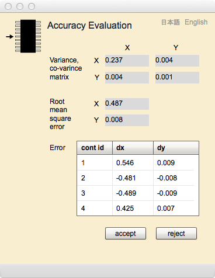

Accuracy Evaluation
This text explains a map orientation and its accuracy evaluation at first, how to read accuracy evaluation page at second, and finally how to operate accuracy evaluation page.
Map orientation
Map orientation means to get unknown parameters for conversion between map coordinates and plane rectangular coordinate. The limited area of the ground may be thought so that it is a plane, because the side of the earth is huge. Thus the geometric relationship between map coordinates and ground coordinates can be defined by linear transformation (Affine transformation in case of gittok). To get unknown parameters of the transformation is called "map orientation".
Affine transformation ia described as follows.
X = ax+by+c
Y = dx+ey+f
Where, (X, Y) is a ground coordinate, (x, y) is a map coordinate.
The number of unknown parameters is six (a to f). It means if there are 3 pairs of (X, Y) and (x, y), Unknown Parameters can be obtained by using 6 equations. However it is impossible to evaluate positional accuracy of (x, y)s, even if they contain errors as they are digitized on the screen. Usually more than 3 control points are digitized and unknown parameters are obtained by applying the least square method. Positional accuracy is evaluated by variance-covariance matrix, root mean square error and estimated errors at each control point.
Accuracy is a difference between true value or a value being recognized as true and measured value. In case of map orientation, measured value is a digitized coordinate of a control point displayed on the screen. While, a value being recognized as a true is a ground coordinate included in the control point file. Accuracy is evaluated by the difference between ground coordinates and converted ground coordinates obtained from map coordinates.Root mean square error and estimated errors at each point are useful values to evaluate the quality of map orientation. If they are small enough, the conversion parameters should be accepted. But it is not god, the user can reject the result and user can try the orientation again.
Accuracy evaluation page

Figure 1. Accuracy evaluation page
Fields
Variance-covariance matrix
A variance-covariance matrix is a square matrix that contains the variances and covariances associated with variables. The diagonal elements of the matrix contain the variances of the variables and the off-diagonal elements contain the covariances between all possible pairs of variables.It is used to calculate standard errors of functions (in case of gittok functions are equations of Affine transformation).
Root mean square error (rmse)
RMSE measures how much error there is between two datasets. RMSE usually compares a predicted value and an observed value. In case of Map orientation, predicted value is a coordinate of ground control poin (X, Y)t. Observed value is a coordinate of control point digitized on the map.
Error
Error is a difference between estimated ground coordinate digitized on the screen and given ground coordinate included in the control point file.
Buttons
accept
Click this button if the result of orientation is sufficient enough.
Then geometry digitizing will be possible.
reject
Click this button if the result is in-sufficient.
Map orientation will be able to perform again.
日本語
今あなたが読んでいるドキュメントが表示されます．
English
You can read the tutorial written in English.